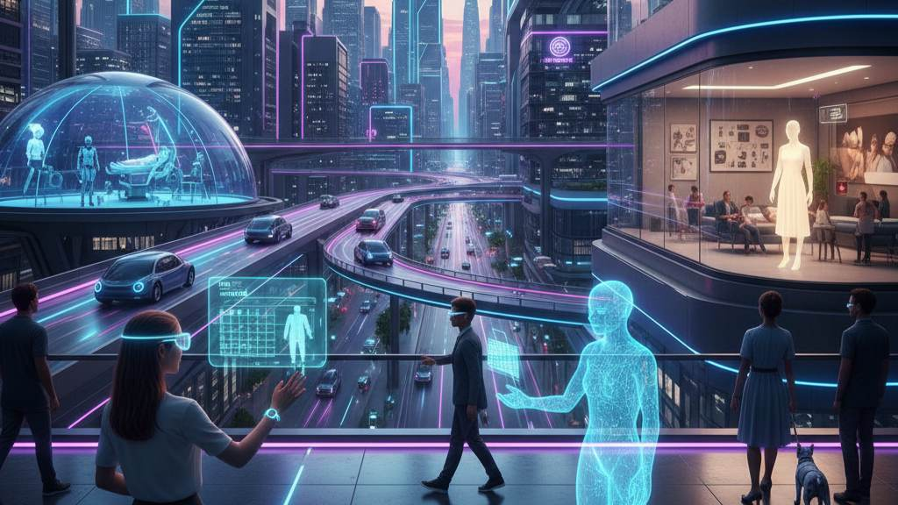

10 Future Tech Trends That Will Change Everyday Life
The pace of technological innovation is faster than ever. From AI assistants and autonomous cars to smart homes and immersive virtual reality, the next wave of tech will reshape how we live, work, learn, and interact. This guide explores the top 10 tech trends expected to transform everyday life and how you can prepare for them.
1. AI Assistants Will Become Personal Life Managers
Artificial Intelligence is no longer limited to simple reminders or voice commands. By the near future, AI assistants will become true personal life managers, capable of handling multiple aspects of your daily routine seamlessly. Imagine waking up to a virtual assistant that not only reminds you of your meetings but also adjusts your schedule based on priorities, tracks your expenses, suggests healthy meals, and even automates repetitive work tasks.
Why AI Assistants Will Be Game-Changers:
- Smart Scheduling: Automatically organize your day, meetings, and deadlines without manual input.
- Financial Management: Track spending, generate reports, and provide personalized budgeting advice.
- Health and Wellness Guidance: Recommend workouts, monitor your diet, and even suggest relaxation routines.
- Daily Decision Support: Assist with work, school, or personal tasks, making life smoother and more productive.
2. Smart Homes Will Become Fully Automated
Our homes are about to become far more intelligent than ever before. With the integration of AI, Internet of Things (IoT) devices, and smart sensors, everyday living will be transformed into a fully automated, hands-off experience. From energy management to security, your home will adapt to your lifestyle effortlessly.
How Smart Homes Will Enhance Daily Life:
- Automated Grocery Management: Refrigerators that monitor supplies and place orders for essentials before you run out.
- Adaptive Climate Control: AI-driven heating, cooling, and lighting that adjusts to your preferences and occupancy patterns.
- Advanced Security: Face recognition cameras and AI-powered alerts that keep your home safe without constant monitoring.
- Hands-Free Home Management: Automated vacuuming, laundry management, and even reminders for household chores, allowing you to focus on what matters most.
3. Virtual Reality Will Replace Traditional Workspaces
Imagine putting on a VR headset and stepping into a fully immersive office, without leaving your home. Virtual Reality (VR) and Augmented Reality (AR) are set to revolutionize the way we work, making remote collaboration feel just as natural as being in a physical office. No more endless video calls or emails—your team can meet, brainstorm, and train in a shared 3D environment that feels real.
How VR Will Change the Way We Work:
- Immersive 3D Meeting Rooms: Join colleagues in a virtual space where discussions, presentations, and brainstorming sessions feel lifelike.
- Virtual Training and Simulations: Employees can practice real-world scenarios safely, from technical procedures to customer interactions, all within a VR environment.
- Global Collaboration Made Easy: Teams from different countries can work together seamlessly, breaking down geographical barriers and boosting productivity.
4. Autonomous Vehicles Will Transform Transportation
The way we travel is on the brink of a dramatic transformation. Autonomous vehicles, including self-driving cars, trucks, and buses, are set to make commuting safer, faster, and more efficient. With AI handling the driving, humans can focus on other tasks, or simply relax during their journey.
The Benefits of Self-Driving Transportation:
- Safer Roads: Advanced sensors and AI reduce human error, significantly lowering traffic accidents and fatalities.
- Hands-Free Commuting: Drivers can use travel time for work, leisure, or rest, making daily commuting stress-free.
- Smarter Logistics: Delivery services and transport networks become more efficient, reducing congestion and improving on-time deliveries.
5. Blockchain Will Secure Digital Identity and Payments
Blockchain technology is set to transform the way we handle personal identity and financial transactions online. By providing a secure, decentralized, and transparent system, blockchain will make online activities safer and more trustworthy. From verifying who you are to ensuring that your payments are tamper-proof, this technology will redefine digital security for everyone.
How Blockchain Will Impact Everyday Life:
- Digital Passports and IDs: Your identity will be securely stored on the blockchain, making it harder for hackers to steal or forge personal information.
- Safe and Fast Online Payments: Transactions will be instant, secure, and transparent, reducing fraud and banking delays.
- Smart Contracts: Agreements can execute automatically when conditions are met, eliminating the need for intermediaries and preventing disputes or fraud.
6. Robotics Will Assist in Hospitals and Homes
Robots are no longer just a futuristic concept—they are becoming an integral part of healthcare and home support. These intelligent machines will help doctors, caregivers, and families by performing routine tasks, monitoring patients, and providing assistance in ways that improve safety and efficiency.
Practical Applications of Robotics:
- Surgical and Hospital Assistance: Robots can assist in complex surgeries, deliver medications, and support medical staff to ensure precision and reduce human error.
- Patient Monitoring: Smart robots can track vital signs, alert caregivers to potential issues, and help maintain treatment schedules for patients.
- Home Care Support: Robots will assist elderly or disabled individuals with daily tasks such as mobility, reminders for medication, and general companionship, enhancing independence and quality of life.
7. Personalized Learning With AI Tutors
Education is evolving from a one-size-fits-all model to a highly personalized experience. AI-powered tutors will adapt lessons and teaching methods to each student’s learning style, pace, and progress. This means every learner can get the guidance they need, making education more effective, engaging, and enjoyable.
How AI Will Transform Learning:
- Adaptive Lesson Plans and Quizzes: AI systems adjust the difficulty and content of lessons in real-time, ensuring students master concepts before moving forward.
- Real-Time Performance Tracking: AI tracks progress, highlights strengths and weaknesses, and provides instant feedback to help students improve faster.
- Virtual Classrooms and Interactive Simulations: Students can participate in immersive lessons and simulations that bring complex subjects to life, no matter where they are in the world.
8. Green Technology Will Power a Sustainable Future
The push toward sustainability is accelerating, and green technology is at the heart of it. From energy production to transportation and everyday materials, eco-friendly innovations will become standard, helping the planet and improving quality of life.
Practical Examples of Green Technology:
- Renewable Energy Adoption: Solar panels, wind turbines, and other renewable sources will power homes, offices, and cities more efficiently than ever.
- Electric Vehicles and Carbon Reduction: EVs and smart transportation systems will reduce greenhouse gas emissions, traffic congestion, and fuel dependency.
- Eco-Friendly Materials and Smart Farming: Biodegradable packaging, sustainable building materials, and precision agriculture will minimize environmental impact while supporting global food security.
9. Wearable Devices Will Monitor Health 24/7
Wearable technology is taking personal health monitoring to a whole new level. Devices like smartwatches, fitness bands, and health trackers will continuously collect data on your body, helping you stay proactive about wellness. These devices won’t just track steps—they will provide actionable insights and early warnings about potential health issues, empowering individuals to live healthier, longer lives.
How Wearables Will Transform Health Monitoring:
- Comprehensive Health Tracking: Monitor heart rate, blood oxygen levels, sleep patterns, and daily activity to maintain overall wellness.
- Advanced Metrics: Track stress, glucose levels, and fitness performance, giving a complete picture of your health.
- Real-Time Alerts and Integration: Receive instant notifications for unusual health patterns and share data seamlessly with doctors or healthcare providers for timely interventions.
10. Digital Shopping Will Become More Interactive
The future of e-commerce is immersive, personalized, and interactive. With AR (Augmented Reality), VR (Virtual Reality), and AI, online shopping will feel almost like visiting a physical store. Consumers will be able to visualize products in their own environment, try items virtually, and get tailored recommendations based on preferences and behavior.
How Technology Will Revolutionize Online Shopping:
- Virtual Try-Ons: Try clothes, accessories, or makeup in a virtual environment before purchasing, reducing returns and boosting confidence.
- Preview Products in Your Space: Visualize furniture, decor, or appliances in your own home using AR, ensuring they fit perfectly.
- AI-Powered Recommendations: Receive personalized suggestions based on your style, previous purchases, and browsing habits for a smarter shopping experience.
Conclusion
The future of technology promises a smarter, safer, and more connected life. Staying informed and adaptable will help you take advantage of these innovations, whether in work, health, education, or everyday living. Embracing these trends today can prepare you for a more efficient and enjoyable tomorrow.